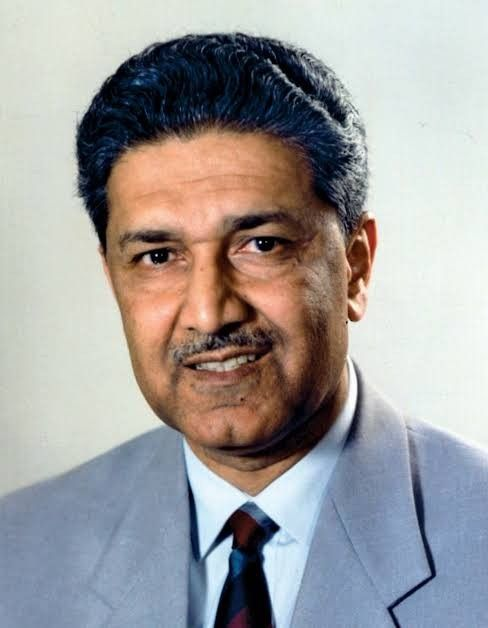

Dr Abdul Qadeer Khan
1936 - 2021
Father of Pakistan atomic weapons
Dr Abdul Qadeer Khan 15 October 1936 – 27 July 2021) was a Pakistani nuclear scientist and metallurgical engineer who is known as the father of Pakistan's nuclear weapons program. He was born in Bhopal, India, and migrated to Pakistan after the partition in 1947. He played a crucial role in developing Pakistan's nuclear capabilities, including the country's first successful nuclear test in 1998. Dr Khan was also involved in various controversies, including allegations of nuclear proliferation.
Books
- Khan, Abdul Qadeer (1972). Advances in Physical Metallurgy (in English, German, and Dutch). Amsterdam, Netherlands: Elsevier Press.
- Khan, Abdul Qadeer (1983). Metallurgical Thermodynamics and Kinetics (in English, German, and Dutch). Islamabad, Pakistan: The Proceedings of the Pakistan Academy of Sciences.
- Khan, Abdul Qadeer; Hussain, Syed Shabbir; Kamran, Mujahid (1997). Dr. A.Q. Khan on science and education. Islamabad, Pakistan: Sang-e-Meel Publications. ISBN 978-969-35-0821-5.
- Khan, Abdul Qadeer (2002). The Name is A.Q. Khan: The Autobiography of Dr. Abdul Qadeer Khan. Lahore, Pakistan: Sang-e-Meel Publications. ISBN 978-969-35-0822-2.